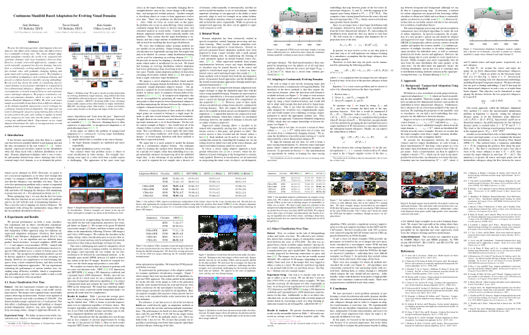

Getting started
This page provides the data and software to implement the continuous manifold-based adaptation algorithm presented at CVPR 2014. For access to the code for this algorithm, you can simply download the zip/tar files at the top of the page, or checkout the git repo.
Datasets
Download the images from the Caltran dataset. The pre-computed features are available within the software package.
Publication
If you use this code or data please cite: 
@inproceeding{Hoffman_CVPR2014,
author={Judy Hoffman and Trevor Darrell and Kate Saenko},
title={Continuous Manifold Based Adaptation For Evolving Visual Domains},
booktitle={Computer Vision and Pattern Recognition (CVPR)},
year={2014},
}
Contact
For questions, please contact Judy Hoffman (jhoffman at eecs.berkeley.edu)